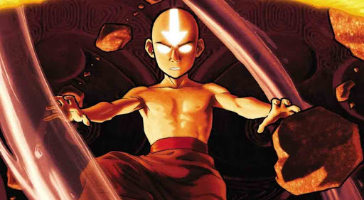

Historia
La historia de este mundo se puede dividir en dos partes, el tiempo anterior al Avatar y el tiempo del Avatar. Antes de la creación del Avatar, los leones tortuga servían como protectores de la humanidad, permitiendo a los seres humanos erigir ciudades encima de sus caparazones. Cada vez que los habitantes de sus ciudades se aventuraban en la Selva de los Espíritus, las criaturas otorgaban al pueblo la capacidad de controlar el elemento con el que la tortuga estaba afiliado; el poder debía ser devuelto en su regreso a la ciudad. Sin embargo, después de la creación del Avatar, los leones tortuga se opusieron a su responsabilidad de protectores de la humanidad y el pueblo fue el encargado de construir sus propias casas dispersas por todo el mundo, lo que finalmente condujo a la división del mundo en las Cuatro Naciones.
El acontecimiento histórico más notable que tuvo lugar durante las aventuras del Equipo Avatar fue la Guerra de los Cien Años. Una serie de acontecimientos importantes ocurrieron durante la época del Equipo Avatar de Korra, incluyendo la Revolución Anti-Control, los acontecimientos que rodearon la Convergencia Armónica, la insurgencia del Loto Rojo y la formación del Imperio Tierra. Algún tiempo antes de la era de Korra, el término "moderno" se usó para describir cómo el Mundo Avatar entró en una era industrial.
La Guerra de los Cien Años, también conocida como la Guerra o la Gran Guerra, fue un gran conflicto militar global que comenzó con el Genocidio de los Nómadas Aire y duró un siglo entero, del 0 DG al 100 DG. El conflicto estalló entre la Nación del Fuego y las otras tres naciones: el Reino Tierra, las Tribus Agua y los Nómadas Aire. Sin embargo, en el transcurso de la escalada del conflicto, varias facciones más pequeñas también se involucraron en la lucha. La guerra fue iniciada por el Señor del Fuego Sozin, que deseaba expandir la Nación del Fuego en el mas grandioso imperio de la historia, y compartir lo que él veía como la prosperidad de su nación con el resto del mundo.
De todas formas, la Guerra de los Cien Años terminó bruscamente aproximadamente un año después de la reaparición del Avatar debido a una combinación de esfuerzos de las otras dos naciones, la destrucción de la flota aérea por parte del Equipo Avatar cuya intención era utilizar el poder del Cometa de Sozin para dar un golpe mortal al Reino Tierra, la victoria de Aang sobre el Rey Fénix Ozai, y la intención del recién coronado Señor del Fuego Zuko de restablecer la paz y la armonía entre las cuatro naciones.